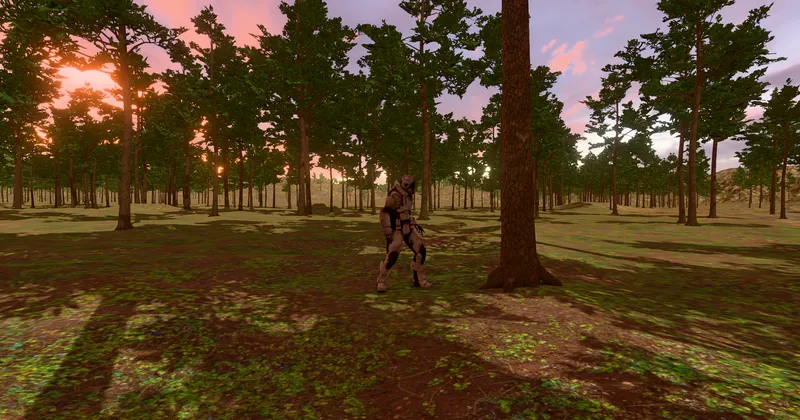

3D > World & Simulation > Landscape
Foliage & Impostors - RedGPU WebGPU Example
Large-scale tree foliage with 3-stage mesh LODs and distant impostors.
대규모 수목의 절차적 배치와 3단계 메쉬 LOD 및 원거리 임포스터를 시연합니다.

3D > World & Simulation > Landscape
Large-scale tree foliage with 3-stage mesh LODs and distant impostors.
대규모 수목의 절차적 배치와 3단계 메쉬 LOD 및 원거리 임포스터를 시연합니다.
